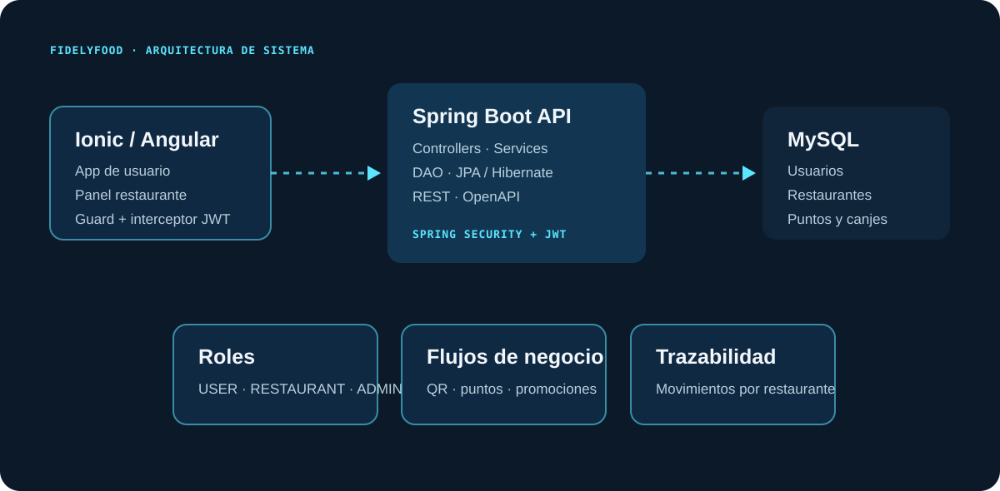
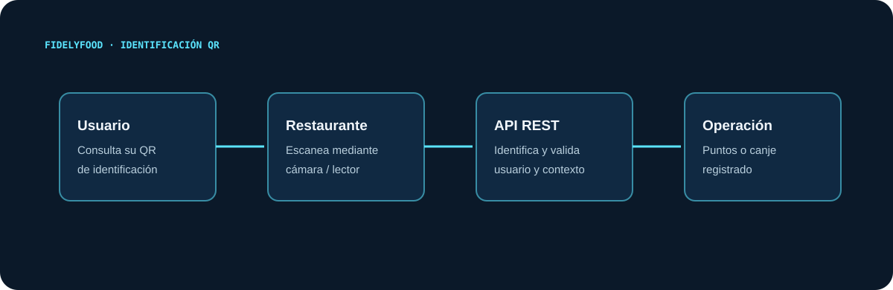
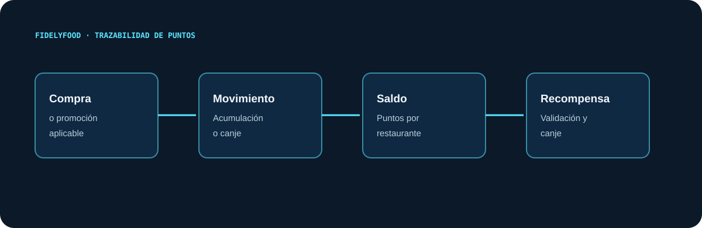
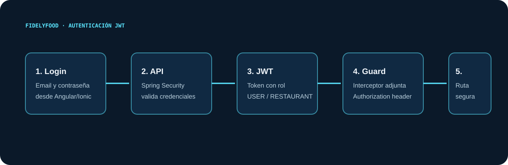

01 · RESUMEN EJECUTIVO
Fidelización diseñada para operar sin tarjetas físicas.
FidelyFood es el Trabajo Final de Grado de Anthony Montagioni. Plantea una solución para restaurantes que centraliza la relación con clientes mediante una aplicación móvil, un panel para establecimientos y una API REST que gobierna autenticación, puntos, promociones, recompensas y canjes.
Objetivo
Digitalizar programas de fidelización, reducir fricción operativa y ofrecer una experiencia basada en QR y beneficios acumulables.
Alcance técnico
Aplicación Angular/Ionic, backend Java/Spring Boot, persistencia MySQL y autorización por roles con JWT.
02 · PROBLEMA Y SOLUCIÓN
Un sistema de puntos con contexto por restaurante.
Problema
Las tarjetas físicas y los procesos manuales dificultan la trazabilidad de puntos, promociones y recompensas, tanto para clientes como para negocios locales.
Solución
Una plataforma multi-restaurante con experiencia diferenciada para usuario, restaurante y administración, conectada por API REST.
Usuario
Se registra, consulta su QR, acumula puntos, explora promociones y canjea recompensas.
Restaurante
Gestiona promociones, recompensas y operaciones de fidelización desde una superficie específica.
03 · ARQUITECTURA
Cliente móvil, API por capas y persistencia relacional.
La solución separa experiencia de usuario, lógica de negocio, seguridad y persistencia. Spring Boot concentra controllers, services y acceso a datos; Angular/Ionic resuelve la experiencia móvil y la navegación por rol.

Frontend
Angular/Ionic con rutas lazy, guards por rol, interceptor de token y componentes para QR.
Backend
Spring Boot con controllers REST, services, DAO/JPA, manejo global de errores y documentación OpenAPI.
Datos
MySQL con entidades de usuario, restaurante, movimientos, promociones, recompensas y canjes.
Seguridad
Spring Security, JWT y autorización diferenciada por USER, RESTAURANT y ADMIN.
04 · FLUJOS DE NEGOCIO
QR, puntos y beneficios con trazabilidad.

Identificación
El usuario muestra su QR y el restaurante lo escanea para identificar el contexto de la operación.
Asignación
Una compra o promoción genera un movimiento de puntos asociado al restaurante.
Saldo
El sistema mantiene el saldo de fidelización por restaurante y consulta su trazabilidad.
Canje
El usuario utiliza puntos disponibles para acceder a una recompensa o promoción válida.

05 · SEGURIDAD JWT Y ROLES
Autorización aplicada a la experiencia y la API.
La autenticación entrega un token JWT que el frontend adjunta en las solicitudes protegidas. Los guards de Angular y Spring Security aplican las restricciones correspondientes a cada rol.

USER
Accede a perfil, QR, puntos, promociones y recompensas.
RESTAURANT
Opera sobre promociones, recompensas y operaciones de fidelización de su negocio.
ADMIN
Cuenta con una superficie administrativa diferenciada en la aplicación.
JWT
El token conecta login, interceptor, guards de ruta y protección de endpoints.
06 · MODELO DE DATOS
El saldo no es una cifra aislada: es una secuencia de movimientos.
El diseño incluye usuarios, restaurantes, promociones, recompensas y canjes. La capa de puntos registra operaciones de acumulación y canje para sostener trazabilidad sobre la fidelización.
Entidades principales
- Usuario y Restaurante
- MovimientoPuntos
- UsuarioRestaurantePuntos
- Promoción y Recompensa
- Canje y Role
Decisión de dominio
Los puntos se gestionan en relación con cada restaurante, evitando tratar la fidelización como un único saldo sin contexto.
07 · RETOS Y APRENDIZAJES
Diseñar el flujo antes de añadir pantallas.
Reto: separar permisos
La solución combina guards de Angular, interceptor JWT y autorización backend para diferenciar superficies y operaciones.
Reto: QR como interfaz
El QR conecta la identidad del usuario con una operación de restaurante sin depender de tarjetas físicas.
Reto: puntos trazables
Los movimientos permiten representar acumulaciones y canjes como operaciones consultables.
Aprendizaje
Una aplicación de negocio necesita alinear modelo de datos, seguridad, API y experiencia de usuario desde el diseño inicial.
08 · EVIDENCIAS TÉCNICAS
Tecnología demostrable en el código.
09 · ENLACES
Documentación y siguientes evidencias.
El repositorio y las capturas reales se añadirán en la siguiente iteración, una vez publicados y seleccionados los activos que representen flujos reales sin exponer datos sensibles.